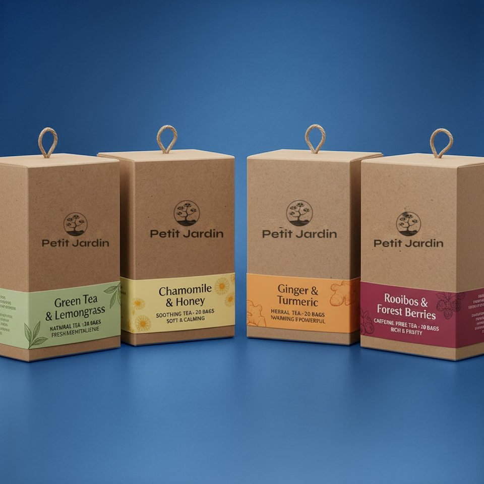
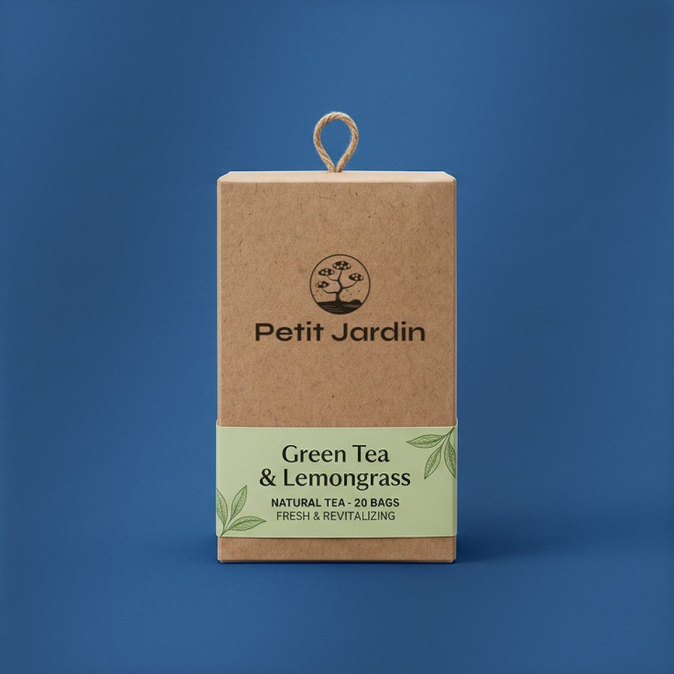
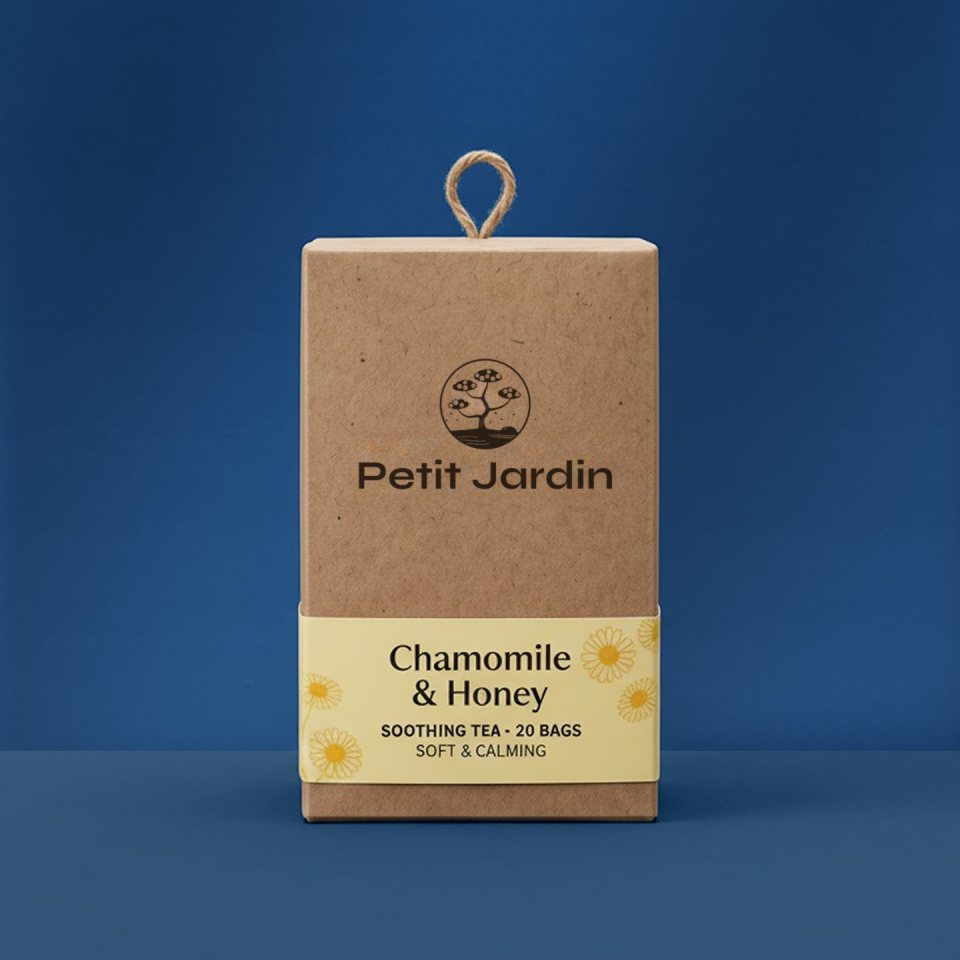
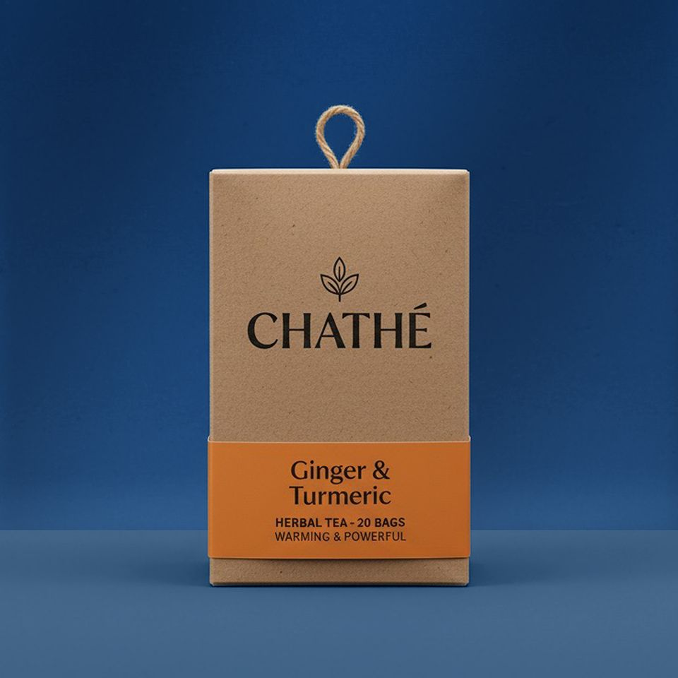
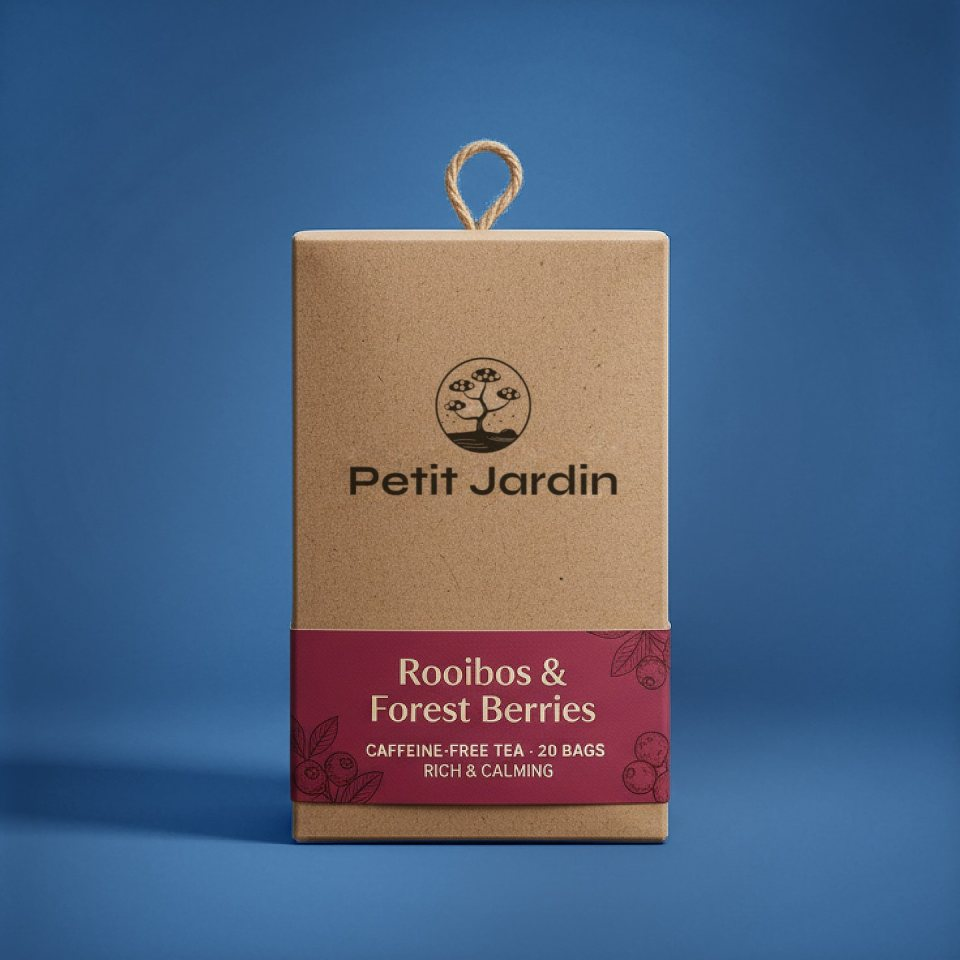
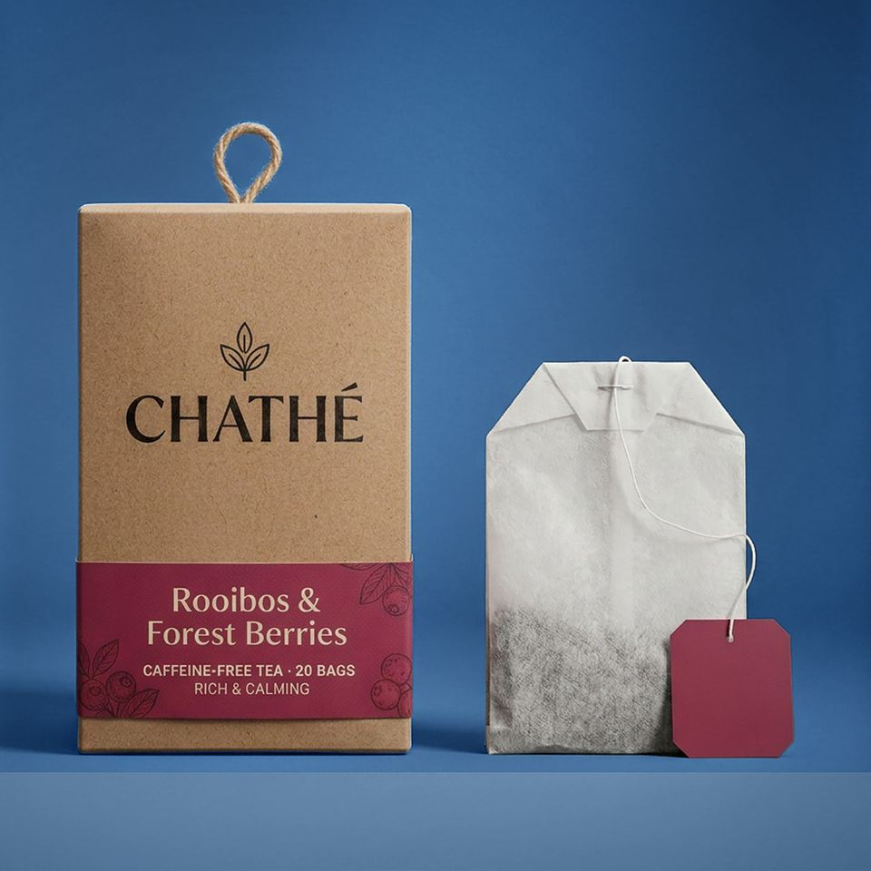

Thee in het tuintje
Een moment van rust, in elk kopje.
Lichte, delicate thee voor wie liever proeft dan haast.

Een klein tuintje, in je kopje.
Petit Jardin betekent kleine tuin. In het Japans: 小さな庭
We houden van thee die niet roept. Thee die je ruikt voor je ze proeft, die licht blijft op de tong en ruimte laat voor een gedachte.
Daarom kiezen we voor zachte melanges en een korte, rustige trektijd. Geen sterke zwarte thee, wel helderheid, bloesem en een warme toets.
Vier smaken, zacht gebrouwen.
Elke smaak heeft zijn eigen temperatuur en trektijd. Die staan er telkens bij.
-

Groene thee & citroengras
Fris en helder, als de eerste lentedag.
80 °C · 2–3 min
-

Kamille & honing
Bloemig en zacht, voor de stille uren.
95 °C · 5 min
-

Gember & kurkuma
Warmte die stil binnenkomt, nooit scherp.
95 °C · 5–7 min
-

Rooibos & bosbes
Van nature zoet, rond en zacht rood.
95 °C · 5 min
Twintig zakjes per doosje. Of begin met de proefset van vier. Hoor het eerst via de nieuwsbrief.
Eén kop. Vijf rustige minuten.
Verwarm
Laat het water net niet koken. Groene thee wil het iets koeler.
Wacht
Twee tot zeven minuten, afhankelijk van de smaak. Kijk hoe de kleur langzaam komt.
Proef
Zonder haast. De eerste slok zegt het meest.
Thee die niet roept, maar fluistert.
Een zacht welkom in je inbox.
Af en toe een brief uit de tuin: een nieuw ritueel, een seizoenssmaak, een rustig moment. Nooit vaker dan nodig.

Dank je.
Kijk even in je inbox om je inschrijving te bevestigen.